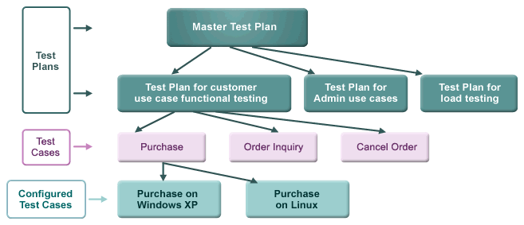
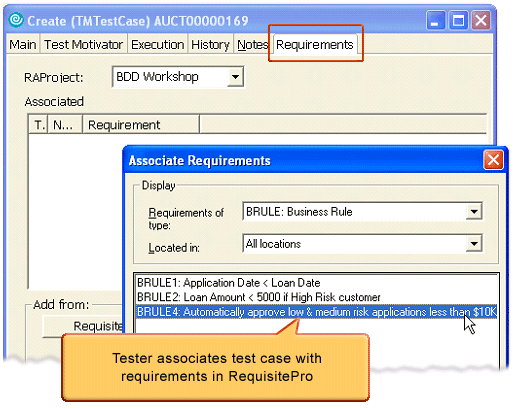
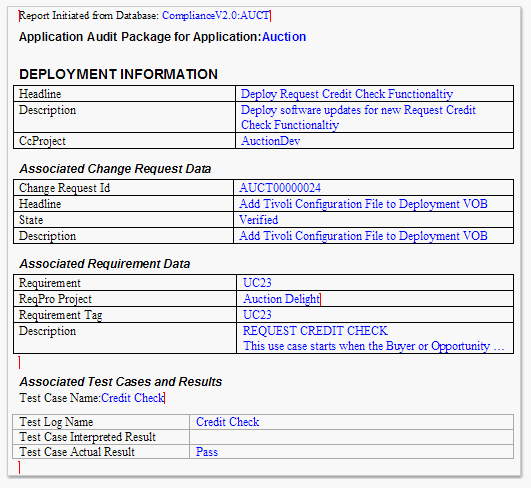

| Guideline: Implementing Auditable traceability with Tools |
 |
|
| Related Elements |
|---|
There are many motivations for traceability. The one we focus on here is the chain of work products that connects requirements to tests, and demonstrates their satisfaction in the product. Why Traceability?Organizations live in a complex environment. Changes in legislation and policy affect how an organization must operate. Organizations must be able to respond to changes in the environment or risk failure. To pass compliance audits, they must be able to provide evidence -- in the form of audit trails -- demonstrating that action was actually taken according to process. This enables an organization to show how it has responded to a change in the environment.
Process automation Handling traceability manually is possible, but it usually equates to a cumbersome, expensive process that negatively impacts the ability of an organization to respond to change. Healthy organizations respond rapidly and effectively; they adapt well to changes in the environment. Unhealthy organizations respond poorly to change; they are slow to adapt, and adaptation is a difficult process. If response to change is mostly manual, response will be slow and difficult. If response to change is automated, the organization will have the ability to respond to change more rapidly and effectively.
Automating change presents an opportunity to transform your business into an adaptive business.
Compliance management implies audits, audits imply traceability, and traceability can be a tremendous headache. IBM Rational brand tools help facilitate compliance management by automating processes and providing traceability.
A change in policy or legislation requires a response from the organization, which often translates to changes in:
Process enhancement:
System Deployment:
Implementation:
Traceability with IBM toolsIBM Rational tools provide traceability through the whole compliance management lifecycle. You can document corporate compliance policies in RequisitePro, and show how policies are traced to initiatives that allow you to comply with those policies. You can model the systems as they currently exist, and as they are going to be built, with IBM® Rational® Software Architect. You can trace from requirements in RequisitePro to designs in Rational Software Architect. You can control your development processes in ClearQuest, and establish traceability requests for system changes to the implementation and testing of changes, again in ClearQuest. You can document changes as you build the system with IBM® Rational® Build Forge™, and control changes to the pieces of the system through ClearCase. This page concentrates on the following:
RequisitePro TraceabilityThe ability to keep track of relationships between requirements is an important aspect of any mature development organization. Not only is traceability a sign of maturity, it is usually a requirement for compliance management. It is required in many real-time safety critical systems (for example, medical systems, air traffic control systems, and others). RequisitePro enables requirements traceability through an easy-to-use interface. In RequisitePro, you can specify the requirements of a system, and show how those requirements are fulfilled through its traceability features. A typical grouping scenario is to group business requirements and Corporate Policies into a requirement type, high-level Compliance Requirements into another, and more detailed application or process requirements (such as software specs) into yet another type. Here is how it is done in Requisite Pro:
Once you enter a variety of requirements of different types into RequisitePro, you can trace between them. Traceability is a bi-directional dependency relationship (a link) between two related requirement types. When you create traceability relationships, RequisitePro visually indicates a dependency between the two requirements. With this information, you can perform real-time impact analysis as requirements change. This knowledge helps you to manage project scope and resource allocation. Specifically, traceability helps to:
Note: Do not confuse traceability relationships (between requirement types) with hierarchical (parent/child) relationships. Hierarchical relationships detail requirements. Traceability relationships show how requirements are related to each other. In RequisitePro, you can view traceability information in the View workplace through an Attribute Matrix, Traceability Matrix, or Traceability Tree. The visual representation of traceability links is visible only in the Traceability Matrix or Traceability Tree. An Attribute Matrix view can show this information textually in the "Traced-to" and "Traced-from" attributes. The ClearQuest-RequisitePro IntegrationRequisitePro and ClearQuest work together to provide full lifecycle traceability between requirements for a system and its testing. You do this by linking Requirements in RequisitePro to test artifacts in ClearQuest. Likewise, you can plan, develop, and then execute tests using ClearQuest test management. If a test fails, enter a defect against the requirement from ClearQuest test management. A defect containing a reference to the requirement being tested will be created. Finally, you can produce an audit report that includes the requirement, the test result, and the defect produced.
ClearQuest links to RequisitePro, IBM Rational Manual Tester, IBM Rational Functional Tester, and IBM Rational
Performance Tester. ClearQuest also integrates with IBM Rational Software Architect and IBM Rational Software
Modeler.
In ClearQuest, the Test Manager view presents test assets in a hierarchy. It includes a Planning and Execution tab. Each has a specific role:
ClearQuest test management organizes your Test Plans, Test Cases, and Configured Test Cases hierarchically as shown below:

Use the Requirements tab to define test inputs (ClearQuest requirements) for specific Test Cases. This step is the
most important step for compliance management, because it establishes the link between the requirement and the test
case (see below for more details). Rational AdministratorThe Rational Administrator feature integrates ClearQuest and RequisitePro. You can create a RequisitePro project and a ClearQuest database, and link them together with the RequisitePro and ClearQuest Integration wizard. This integration allows you to link requirements to test artifacts, and to provide traceability between them.
The relationship between ClearQuest test management and RequisitePro is established by associating a requirement to a test case. This step is critical for demonstrating traceability from requirements to their tests.
To associate a requirement to a test case, click the Requirements tab in the test case editor. Select the RequisitePro project for this system. Log in to RequisitePro and pick a requirement to associate to the test case.  DefectsAfter a configured test case record is executed and the test results are committed using a ClearQuest Client, you can use any ClearQuest client to associate a defect record with the Test Log record. To create defects in ClearQuest:
Audit ReportingThe final step in creating an auditable traceability from requirements through the testing of those requirements is to create an audit report. This can be done using Rational SoDA. A sample audit report appears below. It shows requirements, change requests, and defects associated with the requirements. 
Resources |